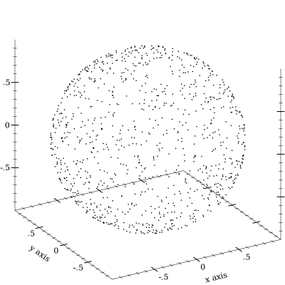
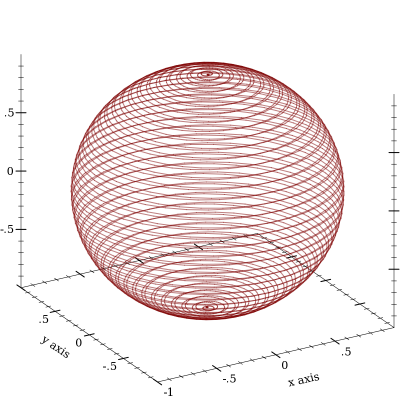
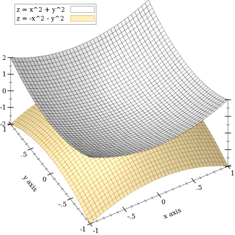
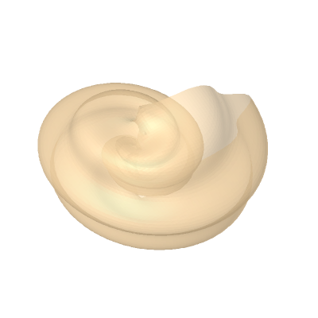
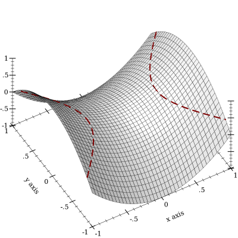
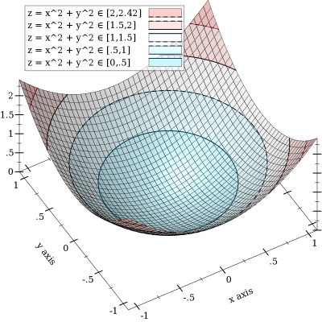
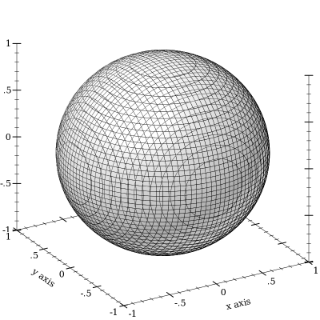
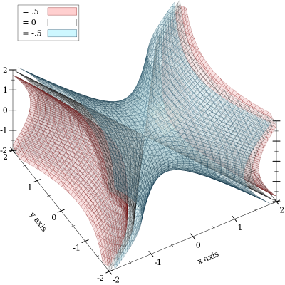
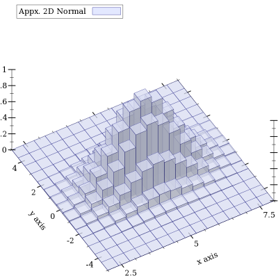
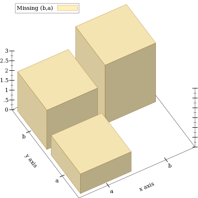

5 3D Renderers
5.1 3D Renderer Function Arguments
Required (and possibly optional) arguments representing the graph to plot.
Optional keyword arguments for overriding calculated bounds, with the default value #f.
Optional keyword arguments that determine the appearance of the plot.
The optional keyword argument #:label, which specifies the name of the renderer in the legend.
See 2D Renderer Function Arguments for a detailed example.
5.2 3D Point Renderers
(points3d vs [ #:x-min x-min #:x-max x-max #:y-min y-min #:y-max y-max #:z-min z-min #:z-max z-max #:sym sym #:color color #:fill-color fill-color #:size size #:line-width line-width #:alpha alpha #:label label]) → renderer3d? vs : (listof (vector/c real? real? real?)) x-min : (or/c rational? #f) = #f x-max : (or/c rational? #f) = #f y-min : (or/c rational? #f) = #f y-max : (or/c rational? #f) = #f z-min : (or/c rational? #f) = #f z-max : (or/c rational? #f) = #f sym : point-sym/c = (point-sym) color : plot-color/c = (point-color) fill-color : (or/c plot-color/c 'auto) = 'auto size : (>=/c 0) = (point-size) line-width : (>=/c 0) = (point-line-width) alpha : (real-in 0 1) = (point-alpha) label : (or/c string? #f) = #f
> (define (runif) (- (* 2 (random)) 1))
> (define (rnormish) (+ (runif) (runif) (runif) (runif)))
> (define xs0 (build-list 1000 (λ _ (rnormish))))
> (define ys0 (build-list 1000 (λ _ (rnormish))))
> (define zs0 (build-list 1000 (λ _ (rnormish))))
> (define mags (map (λ (x y z) (sqrt (+ (sqr x) (sqr y) (sqr z)))) xs0 ys0 zs0))
> (define xs (map / xs0 mags))
> (define ys (map / ys0 mags))
> (define zs (map / zs0 mags))
> (plot3d (points3d (map vector xs ys zs) #:sym 'dot) #:altitude 25) 
(vector-field3d f [ x-min x-max y-min y-max z-min z-max #:samples samples #:scale scale #:color color #:line-width line-width #:line-style line-style #:alpha alpha #:label label]) → renderer3d?
f :
(or/c (real? real? real? . -> . (vector/c real? real? real?)) ((vector/c real? real? real?) . -> . (vector/c real? real? real?))) x-min : (or/c rational? #f) = #f x-max : (or/c rational? #f) = #f y-min : (or/c rational? #f) = #f y-max : (or/c rational? #f) = #f z-min : (or/c rational? #f) = #f z-max : (or/c rational? #f) = #f samples : exact-positive-integer? = ( vector-field3d-samples)
scale : (or/c real? (one-of/c 'auto 'normalized)) = (vector-field-scale) color : plot-color/c = (vector-field-color) line-width : (>=/c 0) = (vector-field-line-width) line-style : plot-pen-style/c = (vector-field-line-style) alpha : (real-in 0 1) = (vector-field-alpha) label : (or/c string? #f) = #f
Example: | ||||
|
5.3 3D Line Renderers
(lines3d vs [ #:x-min x-min #:x-max x-max #:y-min y-min #:y-max y-max #:z-min z-min #:z-max z-max #:color color #:width width #:style style #:alpha alpha #:label label]) → renderer3d? vs : (listof (vector/c real? real? real?)) x-min : (or/c rational? #f) = #f x-max : (or/c rational? #f) = #f y-min : (or/c rational? #f) = #f y-max : (or/c rational? #f) = #f z-min : (or/c rational? #f) = #f z-max : (or/c rational? #f) = #f color : plot-color/c = (line-color) width : (>=/c 0) = (line-width) style : plot-pen-style/c = (line-style) alpha : (real-in 0 1) = (line-alpha) label : (or/c string? #f) = #f
(parametric3d f t-min t-max [ #:x-min x-min #:x-max x-max #:y-min y-min #:y-max y-max #:z-min z-min #:z-max z-max #:samples samples #:color color #:width width #:style style #:alpha alpha #:label label]) → renderer3d? f : (real? . -> . (vector/c real? real? real?)) t-min : rational? t-max : rational? x-min : (or/c rational? #f) = #f x-max : (or/c rational? #f) = #f y-min : (or/c rational? #f) = #f y-max : (or/c rational? #f) = #f z-min : (or/c rational? #f) = #f z-max : (or/c rational? #f) = #f samples : (and/c exact-integer? (>=/c 2)) = (line-samples) color : plot-color/c = (line-color) width : (>=/c 0) = (line-width) style : plot-pen-style/c = (line-style) alpha : (real-in 0 1) = (line-alpha) label : (or/c string? #f) = #f
> (require (only-in plot/utils 3d-polar->3d-cartesian))
> (plot3d (parametric3d (λ (t) (3d-polar->3d-cartesian (* t 80) t 1)) (- pi) pi #:samples 3000 #:alpha 0.5) #:altitude 25) 
5.4 3D Surface Renderers
(surface3d f [ x-min x-max y-min y-max #:z-min z-min #:z-max z-max #:samples samples #:color color #:style style #:line-color line-color #:line-width line-width #:line-style line-style #:alpha alpha #:label label]) → renderer3d? f : (real? real? . -> . real?) x-min : (or/c rational? #f) = #f x-max : (or/c rational? #f) = #f y-min : (or/c rational? #f) = #f y-max : (or/c rational? #f) = #f z-min : (or/c rational? #f) = #f z-max : (or/c rational? #f) = #f samples : (and/c exact-integer? (>=/c 2)) = (plot3d-samples) color : plot-color/c = (surface-color) style : plot-brush-style/c = (surface-style) line-color : plot-color/c = (surface-line-color) line-width : (>=/c 0) = (surface-line-width) line-style : plot-pen-style/c = (surface-line-style) alpha : (real-in 0 1) = (surface-alpha) label : (or/c string? #f) = #f
> (plot3d (list (surface3d (λ (x y) (+ (sqr x) (sqr y))) -1 1 -1 1 #:label "z = x^2 + y^2") (surface3d (λ (x y) (- (+ (sqr x) (sqr y)))) -1 1 -1 1 #:color 4 #:line-color 4 #:label "z = -x^2 - y^2"))) 
(polar3d f [ #:x-min x-min #:x-max x-max #:y-min y-min #:y-max y-max #:z-min z-min #:z-max z-max #:samples samples #:color color #:style style #:line-color line-color #:line-width line-width #:line-style line-style #:alpha alpha #:label label]) → renderer3d? f : (real? real? . -> . real?) x-min : (or/c rational? #f) = #f x-max : (or/c rational? #f) = #f y-min : (or/c rational? #f) = #f y-max : (or/c rational? #f) = #f z-min : (or/c rational? #f) = #f z-max : (or/c rational? #f) = #f samples : (and/c exact-integer? (>=/c 2)) = (plot3d-samples) color : plot-color/c = (surface-color) style : plot-brush-style/c = (surface-style) line-color : plot-color/c = (surface-line-color) line-width : (>=/c 0) = (surface-line-width) line-style : plot-pen-style/c = (surface-line-style) alpha : (real-in 0 1) = (surface-alpha) label : (or/c string? #f) = #f
Currently, latitudes range from 0 to (* 2 pi), and longitudes from (* -1/2 pi) to (* 1/2 pi). These intervals may become optional arguments to polar3d in the future.
> (parameterize ([plot-decorations? #f] [plot3d-samples 75]) (define (f1 θ ρ) (+ 1 (/ θ 2 pi) (* 1/8 (sin (* 8 ρ))))) (define (f2 θ ρ) (+ 0 (/ θ 2 pi) (* 1/8 (sin (* 8 ρ))))) (plot3d (list (polar3d f1 #:color "navajowhite" #:line-style 'transparent #:alpha 2/3) (polar3d f2 #:color "navajowhite" #:line-style 'transparent #:alpha 2/3)))) 
5.5 3D Contour (Isoline) Renderers
(isoline3d f z [ x-min x-max y-min y-max #:z-min z-min #:z-max z-max #:samples samples #:color color #:width width #:style style #:alpha alpha #:label label]) → renderer3d? f : (real? real? . -> . real?) z : real? x-min : (or/c rational? #f) = #f x-max : (or/c rational? #f) = #f y-min : (or/c rational? #f) = #f y-max : (or/c rational? #f) = #f z-min : (or/c rational? #f) = #f z-max : (or/c rational? #f) = #f samples : (and/c exact-integer? (>=/c 2)) = (plot3d-samples) color : plot-color/c = (line-color) width : (>=/c 0) = (line-width) style : plot-pen-style/c = (line-style) alpha : (real-in 0 1) = (line-alpha) label : (or/c string? #f) = #f
The appearance keyword arguments are interpreted identically to the appearance keyword arguments to isoline.
> (define (saddle x y) (- (sqr x) (sqr y)))
> (plot3d (list (surface3d saddle -1 1 -1 1) (isoline3d saddle 1/4 #:width 2 #:style 'long-dash))) 
(contours3d f [ x-min x-max y-min y-max #:z-min z-min #:z-max z-max #:samples samples #:levels levels #:colors colors #:widths widths #:styles styles #:alphas alphas #:label label]) → renderer3d? f : (real? real? . -> . real?) x-min : (or/c rational? #f) = #f x-max : (or/c rational? #f) = #f y-min : (or/c rational? #f) = #f y-max : (or/c rational? #f) = #f z-min : (or/c rational? #f) = #f z-max : (or/c rational? #f) = #f samples : (and/c exact-integer? (>=/c 2)) = (plot3d-samples)
levels : (or/c 'auto exact-positive-integer? (listof real?)) = (contour-levels) colors : (plot-colors/c (listof real?)) = (contour-colors) widths : (pen-widths/c (listof real?)) = (contour-widths) styles : (plot-pen-styles/c (listof real?)) = (contour-styles) alphas : (alphas/c (listof real?)) = (contour-alphas) label : (or/c string? #f) = #f
The appearance keyword arguments are interpreted identically to the appearance keyword arguments to contours. In particular, when levels is 'auto, contour values correspond precisely to z axis ticks.
(contour-intervals3d f [ x-min x-max y-min y-max #:z-min z-min #:z-max z-max #:samples samples #:levels levels #:colors colors #:styles styles #:line-colors line-colors #:line-widths line-widths #:line-styles line-styles #:contour-colors contour-colors #:contour-widths contour-widths #:contour-styles contour-styles #:alphas alphas #:label label]) → renderer3d? f : (real? real? . -> . real?) x-min : (or/c rational? #f) = #f x-max : (or/c rational? #f) = #f y-min : (or/c rational? #f) = #f y-max : (or/c rational? #f) = #f z-min : (or/c rational? #f) = #f z-max : (or/c rational? #f) = #f samples : (and/c exact-integer? (>=/c 2)) = (plot3d-samples)
levels : (or/c 'auto exact-positive-integer? (listof real?)) = (contour-levels)
colors : (plot-colors/c (listof ivl?)) = (contour-interval-colors)
styles : (plot-brush-styles/c (listof ivl?)) = (contour-interval-styles)
line-colors : (plot-colors/c (listof ivl?)) = (contour-interval-line-colors)
line-widths : (pen-widths/c (listof ivl?)) = (contour-interval-line-widths)
line-styles : (plot-pen-styles/c (listof ivl?)) = (contour-interval-line-styles)
contour-colors : (plot-colors/c (listof real?)) = (contour-colors)
contour-widths : (pen-widths/c (listof real?)) = (contour-widths)
contour-styles : (plot-pen-styles/c (listof real?)) = (contour-styles) alphas : (alphas/c (listof ivl?)) = (contour-interval-alphas) label : (or/c string? #f) = #f
> (plot3d (contour-intervals3d (λ (x y) (+ (sqr x) (sqr y))) -1.1 1.1 -1.1 1.1 #:label "z = x^2 + y^2")) 
5.6 3D Isosurface Renderers
(isosurface3d f d [ x-min x-max y-min y-max z-min z-max #:samples samples #:color color #:style style #:line-color line-color #:line-width line-width #:line-style line-style #:alpha alpha #:label label]) → renderer3d? f : (real? real? real? . -> . real?) d : rational? x-min : (or/c rational? #f) = #f x-max : (or/c rational? #f) = #f y-min : (or/c rational? #f) = #f y-max : (or/c rational? #f) = #f z-min : (or/c rational? #f) = #f z-max : (or/c rational? #f) = #f samples : (and/c exact-integer? (>=/c 2)) = (plot3d-samples) color : plot-color/c = (surface-color) style : plot-brush-style/c = (surface-style) line-color : plot-color/c = (surface-line-color) line-width : (>=/c 0) = (surface-line-width) line-style : plot-pen-style/c = (surface-line-style) alpha : (real-in 0 1) = (surface-alpha) label : (or/c string? #f) = #f
> (plot3d (isosurface3d (λ (x y z) (sqrt (+ (sqr x) (sqr y) (sqr z)))) 1 -1 1 -1 1 -1 1) #:altitude 25) 
(isosurfaces3d f [ x-min x-max y-min y-max z-min z-max #:d-min d-min #:d-max d-max #:samples samples #:levels levels #:colors colors #:styles styles #:line-colors line-colors #:line-widths line-widths #:line-styles line-styles #:alphas alphas #:label label]) → renderer3d? f : (real? real? real? . -> . real?) x-min : (or/c rational? #f) = #f x-max : (or/c rational? #f) = #f y-min : (or/c rational? #f) = #f y-max : (or/c rational? #f) = #f z-min : (or/c rational? #f) = #f z-max : (or/c rational? #f) = #f d-min : (or/c rational? #f) = #f d-max : (or/c rational? #f) = #f samples : (and/c exact-integer? (>=/c 2)) = (plot3d-samples)
levels : (or/c 'auto exact-positive-integer? (listof real?)) = (isosurface-levels) colors : (plot-colors/c (listof real?)) = (isosurface-colors)
styles : (plot-brush-styles/c (listof real?)) = (isosurface-styles)
line-colors : (plot-colors/c (listof real?)) = (isosurface-line-colors)
line-widths : (pen-widths/c (listof real?)) = (isosurface-line-widths)
line-styles : (plot-pen-styles/c (listof real?)) = (isosurface-line-styles) alphas : (alphas/c (listof real?)) = (isosurface-alphas) label : (or/c string? #f) = #f
> (define (saddle x y z) (- (sqr x) (* 1/2 (+ (sqr y) (sqr z)))))
> (plot3d (isosurfaces3d saddle #:d-min -1 #:d-max 1 #:label "") #:x-min -2 #:x-max 2 #:y-min -2 #:y-max 2 #:z-min -2 #:z-max 2) 
If it helps, think of the output of f as a density or charge.
5.7 3D Rectangle Renderers
(rectangles3d rects [ #:x-min x-min #:x-max x-max #:y-min y-min #:y-max y-max #:z-min z-min #:z-max z-max #:color color #:style style #:line-color line-color #:line-width line-width #:line-style line-style #:alpha alpha #:label label]) → renderer3d? rects : (listof (vector/c ivl? ivl? ivl?)) x-min : (or/c rational? #f) = #f x-max : (or/c rational? #f) = #f y-min : (or/c rational? #f) = #f y-max : (or/c rational? #f) = #f z-min : (or/c rational? #f) = #f z-max : (or/c rational? #f) = #f color : plot-color/c = (rectangle-color) style : plot-brush-style/c = (rectangle-style) line-color : plot-color/c = (rectangle-line-color) line-width : (>=/c 0) = (rectangle3d-line-width) line-style : plot-pen-style/c = (rectangle-line-style) alpha : (real-in 0 1) = (rectangle-alpha) label : (or/c string? #f) = #f
> (require (only-in plot/utils bounds->intervals linear-seq))
> (define (norm2 x y) (exp (* -1/2 (+ (sqr (- x 5)) (sqr y)))))
> (define x-ivls (bounds->intervals (linear-seq 2 8 16)))
> (define y-ivls (bounds->intervals (linear-seq -5 5 16)))
> (define x-mids (linear-seq 2 8 15 #:start? #f #:end? #f))
> (define y-mids (linear-seq -5 5 15 #:start? #f #:end? #f))
> (plot3d (rectangles3d (append* (for/list ([y-ivl (in-list y-ivls)] [y (in-list y-mids)]) (for/list ([x-ivl (in-list x-ivls)] [x (in-list x-mids)]) (define z (norm2 x y)) (vector x-ivl y-ivl (ivl 0 z))))) #:alpha 3/4 #:label "Appx. 2D Normal")) 
(discrete-histogram3d cat-vals [ #:x-min x-min #:x-max x-max #:y-min y-min #:y-max y-max #:z-min z-min #:z-max z-max #:gap gap #:color color #:style style #:line-color line-color #:line-width line-width #:line-style line-style #:alpha alpha #:label label #:x-far-ticks? x-far-ticks? #:y-far-ticks? y-far-ticks?]) → renderer3d? cat-vals : (listof (vector/c any/c any/c (or/c real? ivl? #f))) x-min : (or/c rational? #f) = 0 x-max : (or/c rational? #f) = #f y-min : (or/c rational? #f) = 0 y-max : (or/c rational? #f) = #f z-min : (or/c rational? #f) = 0 z-max : (or/c rational? #f) = #f gap : (real-in 0 1) = (discrete-histogram-gap) color : plot-color/c = (rectangle-color) style : plot-brush-style/c = (rectangle-style) line-color : plot-color/c = (rectangle-line-color) line-width : (>=/c 0) = (rectangle3d-line-width) line-style : plot-pen-style/c = (rectangle-line-style) alpha : (real-in 0 1) = (rectangle-alpha) label : (or/c string? #f) = #f x-far-ticks? : boolean? = #f y-far-ticks? : boolean? = #f
> (plot3d (discrete-histogram3d '(#(a a 1) #(a b 2) #(b b 3)) #:label "Missing (b,a)" #:color 4 #:line-color 4)) 
(stacked-histogram3d cat-vals [ #:x-min x-min #:x-max x-max #:y-min y-min #:y-max y-max #:z-min z-min #:z-max z-max #:gap gap #:colors colors #:styles styles #:line-colors line-colors #:line-widths line-widths #:line-styles line-styles #:alphas alphas #:labels labels #:x-far-ticks? x-far-ticks? #:y-far-ticks? y-far-ticks?]) → (listof renderer3d?) cat-vals : (listof (vector/c any/c any/c (listof real?))) x-min : (or/c rational? #f) = 0 x-max : (or/c rational? #f) = #f y-min : (or/c rational? #f) = 0 y-max : (or/c rational? #f) = #f z-min : (or/c rational? #f) = 0 z-max : (or/c rational? #f) = #f gap : (real-in 0 1) = (discrete-histogram-gap) colors : (plot-colors/c nat/c) = (stacked-histogram-colors)
styles : (plot-brush-styles/c nat/c) = (stacked-histogram-styles)
line-colors : (plot-colors/c nat/c) = (stacked-histogram-line-colors)
line-widths : (pen-widths/c nat/c) = (stacked-histogram-line-widths)
line-styles : (plot-pen-styles/c nat/c) = (stacked-histogram-line-styles) alphas : (alphas/c nat/c) = (stacked-histogram-alphas) labels : (labels/c nat/c) = '(#f) x-far-ticks? : boolean? = #f y-far-ticks? : boolean? = #f
Examples: | |||||||
|